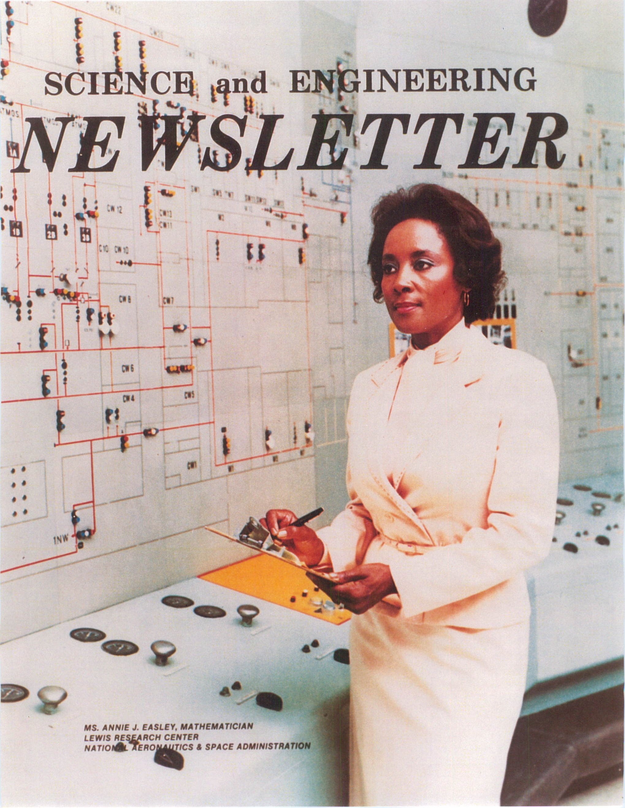

NASA's cover page of Science and Engineering Newsletter
Early life and education
Annie Easley was born to Bud McCrory and Willie Sims in Birmingham, Alabama. She was raised by her mother and had a brother six years her senior.
Before the Civil Rights Movement, educational and career opportunities for African-American children were very limited.
Segregation was prevalent, African-American children were educated separately from white children,
and their schools were often inferior to white schools. Annie's mother told her that she could be anything, but she would have to work at it.
she encouraged Annie to get a good education.
From the fifth grade through high school, Annie attended Holy Family High School, and was valedictorian of her graduating class.
At a young age Annie had interest in becoming a nurse, but around the age of 16 she decided to study pharmacy.
In 1950, Easley enrolled in classes at Xavier University in New Orleans,
which was then an African-American Roman Catholic University, and majored in pharmacy for about two years.
In 1954, she returned to Birmingham. As part of the Jim Crow laws that maintained racial inequality,
African Americans were required to pass a literacy test and pay a poll tax in order to vote, which was outlawed in 1964 in the Twenty-fourth Amendment.
She remembered the test giver looking at her application and saying only,
"You went to Xavier University. Two dollars." Subsequently, she helped other African-Americans prepare for the test.
Shortly thereafter, she moved to Cleveland to be closer to her husband's family, with the intention of continuing her studies.
Unfortunately, the local university had ended its pharmacy program a short time before and no nearby alternative existed.
Throughout the 1970s, Easley advocated for and encouraged female and minority students at college career days to work in STEM careers.
She tutored elementary and high school children as well as young adults who had dropped out of school in a work-study program.
Personal life
In 1954, Annie Easley married a man from the military. After her husband had been discharged from the military, the 2 of them moved to Cleveland,
Ohio to be near his family. Easley divorced later in her life. She continued attending school and furthered her education. It was common for her to be tutoring or studying in her free time.
She obtained another degree from Cleveland State in the department of mathematics.
Easley had always loved dressing up. She wore stockings and heels almost everyday in college. Although there were no dress code in her work department, wearing pants as a woman during that
time was still not normalized.
However, she was one of the first to wear pants to work in the 1970s after talking to her supervisor about it.
In her first three years after retiring from NASA, Easley focused on volunteer work, often telling people she put more miles on her car as a retiree than as a worker.
She traveled the world, mostly to ski, and become an independent contractor in real estate. Although she no longer tutored, she expressed that she was always willing to talk
to students at career days and similar events if asked
Performance and Operational Economics Estimates for a Coal Gasification Combined-Cycle Cogeneration Powerplant. Nainiger, Joseph J.; Burns, Raymond K.; Easley, Annie J. NASA, Lewis Research Center, Cleveland, Ohio. NASA Tech Memo 82729 Mar 1982 31p
Bleed Cycle Propellant Pumping in a Gas-Core Nuclear Rocket Engine System. Kascak, A. F.; Easley, A. J. National Aeronautics and Space Administration. Lewis Research Center, Cleveland, Ohio. Report No.: NASA-TM-X-2517; E-6639 March 1972
Effect of Turbulent Mixing on Average Fuel Temperatures in a Gas-Core Nuclear Rocket Engine. Easley, A. J.; Kascak, A. F.; National Aeronautics and Space Administration. Lewis Research Center, Cleveland, Ohio. Report No.: NASA-TN-D-4882 Nov 1968